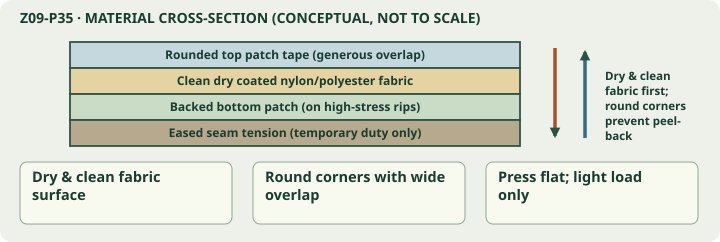

Z09-P35 · Tools and construction · New manuscript
Patch torn tent flies, tarps and rain shells cleanly in the field
Stop fabric tears from propagating in wind and seal rain leaks cleanly with rounded adhesive patches.
When it applies · Repairing punctures, ember holes or rips in nylon/polyester tents, rain shells and insulated jackets.
Equipment · Compatible fabric repair tape, clean dry cloth, small scissors and flat backing surface.

Actions
- Dry and wipe dirt, grease or moisture completely off the torn fabric area—adhesive fails rapidly on damp, dusty or cold greasy fabric.[K07, E20, ED]
- Cut patch corners into smooth rounded curves (square corners catch and peel immediately) leaving generous overlap beyond all tear ends, and press firmly from the center outward against a flat support; patch both sides on high-stress rips.[K07, ED]
- Keep high-stress seam rips or corner tie-out failures lightly loaded—adhesive tape stops drafts and small drips cleanly but cannot match sewn structural reinforcement in gales.[K07, E16, E20]
Failure recognition · Sticking a ragged square strip of damp tape onto a wet tent wall in driving rain without backing both sides or easing guyline tension.[K07, E20]
Verify · Confirm clean dry bond, rounded patch edges, eased seam tension and dry interior below the patch during rain.[K07, E20, ED]
Stop or change course · If a structural load seam or large fly panel splits open in high wind, abandon reliance on temporary tape and relocate to safer refuge.[K07, E16]
Evidence and editorial notes
- E16 · NWS · Wind Safety (current web edition)
- Section: Wind Safety > High Wind Hazards · Conditions: Forecast or developing high winds, squalls, or straight-line winds
Support: High winds topple trees, loft debris, and stress lightweight shelters beyond fabric and anchor limits; relocate out of timbered fall zones and into substantial shelter before gusts peak.
Limitations: Tents and tarps lack standardized wind-speed survival guarantees across soil types and pitch angles. · Conflicting evidence: None; avoids unvalidated mph ratings for improvised pitches.
Editorial note: Drives high-wind shelter inspection, guying limits, and abandonment thresholds. · Specialist reviewer: Weather safety and shelter equipment
Primary source · checked 2026-11-24 - E20 · NPS · Camping: What to Bring (current web edition)
- Section: Camping: What to Bring > Shelter and Sleep System · Conditions: Overnight camping across three-season and cool conditions
Support: Match tent/tarp, groundsheet, sleeping pad, and sleeping bag ratings to expected night lows and precipitation; test pitching and inspect poles, zippers, and stakes before departure.
Limitations: Manufacturer comfort ratings assume dry insulation, ground pad use, and adequate caloric intake. · Conflicting evidence: None; reinforces pre-trip inspection and dry-sleep separation.
Editorial note: Anchors manufactured shelter selection, groundsheet fit, and gear readiness. · Specialist reviewer: Shelter equipment and field education
Primary source · checked 2026-11-24 - K07 · NPS · Ten Essentials (current web edition)
- Section: Repair Kit and Tools · Conditions: Field equipment repair during backcountry travel
Support: Carry a route-appropriate repair kit (duct/gear tape, multi-tool, cordage, patch supplies) matched to shelter, pack, stove and water gear; verify compatibility before departure.
Limitations: Field patches restore temporary function and do not restore full original storm or load ratings. · Conflicting evidence: None; aligns with E02 and E20.
Editorial note: Grounds field-repair kits, temporary patches and equipment failure limits. · Specialist reviewer: Field equipment safety
Primary source · checked 2026-11-24
Source lineage · NPS camping gear and repair kit; new manuscript · Classification · New manuscript.